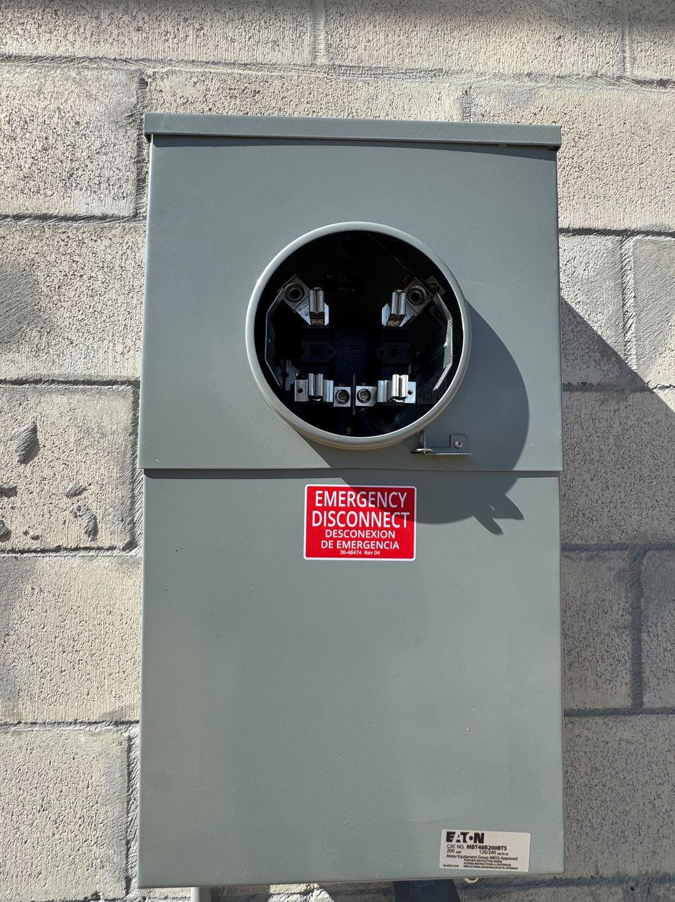

Cómo instalar un medidor principal combinado — el TUG de Sharma
Este es el trabajo TUG: la cuadrilla va a una casa en construcción e instala el medidor para que el trabajo obtenga su TUG Preliminary Power Release — energía temporal para construir. El TUG de Sharma es un proceso corto y exacto. No es todo el servicio de la casa — el panel, los alimentadores y los circuitos derivados vienen en el rough y el trim. El TUG son estas cinco cosas, bien hechas: medidor en la pared · breaker y GFI instalados y marcados · puesta a tierra al UFER en tubo PVC · puente de puesta a tierra instalado · cubiertas, etiquetas y fotos.
Detalles estándar de servicio eléctrico de Sharma, 7 hojas — E-0 portada · E-5 combinado subterráneo lado a lado · E-6 aéreo · E-7 combinado apilado (BORRADOR).
La imagen — un TUG terminado
Versión de plano de ingeniería
Eso es todo el TUG. Si lo que está viendo tiene más que esto, ya no está en el TUG — está en trabajo de rough-in, que es otra lección.
De un trabajo real de Sharma — el equipo real
Fotos propias de Sharma de un TUG instalándose en una pared de bloque. Toque cualquier foto para verla en tamaño completo — lea las etiquetas, eso es parte de la lección.





El otro tipo de medidor
Versión de plano de ingeniería
El otro tipo, dibujado completo — combinado apilado arriba, el mismo TUG abajo. El estándar de Sharma sigue siendo el Siemens lado a lado.
Antes de salir
- Equipo: Sharma normalmente usa Siemens — medidor principal combinado (ejemplo: Siemens MM0202B1200, principal de 200A). En el camión para un TUG: el combinado, un breaker de 20A, un receptáculo GFCI con caja a prueba de intemperie y una cubierta certificada extra-duty while-in-use (de burbuja) — la cubierta profunda que se mantiene a prueba de intemperie con un cable conectado, no una tapa abatible común, tubo PVC de ½ pulgada para el recorrido de tierra (el cobre va en PVC de ½-in), adaptadores macho de PVC, tuercas de seguridad (locknuts) y bushings para cada entrada de tubo, el puente de puesta a tierra entre sistemas, conductor de tierra y abrazaderas certificadas, un codo de 90° (sweep) y PVC Schedule 40 de 2 pulgadas para el tubo de bajada subterráneo, abrazaderas para tubo — 2 mínimo para el tubo de bajada (Mineralac es lo mejor, las abrazaderas rígidas de 2 agujeros también sirven), etiquetas.
- Ubicación: donde digan el plano y la compañía — en las casas de Sharma el medidor va en el lado del garaje. La altura del medidor es regla de la compañía — verifíquela, no la adivine.
- Encuentre primero el extremo (stub) del UFER. Sepa dónde conecta la tierra antes de montar el combinado — eso decide por dónde va su recorrido de PVC.
El UFER — electrodo revestido en concreto
Lleva el nombre de Herbert Ufer. Un UFER es un electrodo de puesta a tierra enterrado en la propia zapata de concreto: al menos 20 ft de varilla de ½ pulgada (una sola pieza, o piezas amarradas con alambre de amarre de acero) o de conductor de cobre desnudo — #4 AWG es el calibre que normalmente se instala en las áreas donde trabajamos — revestido en al menos 2 pulgadas de concreto, cerca del fondo de la zapata, en contacto directo con la tierra. El concreto mantiene la humedad contra el acero/cobre, así que un UFER es uno de los mejores electrodos que existen — mejor que una varilla clavada.
Trabajar el UFER en un trabajo de Sharma
- Proteja el extremo (stub). La punta de varilla o cobre que sobresale es todo el punto de conexión. No deje que la corten, la doblen hasta aplanarla ni la entierren. Si un extremo está cortado o falta, avise al capataz — no clave simplemente una varilla y se quede callado.
- Páselo en PVC. Sharma pasa el conductor de tierra desde el combinado hasta el UFER protegido en tubo PVC — ese es el tubo que se ve bajando por la pared en la Foto 1.
- Conéctelo bien: abrazadera/conector certificado, hecho para uso en varilla/revestido en concreto. El cobre #4 es el GEC más grande que el código exige hacia un UFER (250.66(B)) — más grande está permitido, nunca es obligatorio.
- Todo electrodo presente se conecta al sistema (250.50). Si un trabajo también tiene varillas o una tubería metálica de agua, todo se une en un solo sistema. Y un UFER se usa cuando el plano/la zapata realmente tiene uno — nunca afirme que hay uno que no existe.
¿No hay UFER en el trabajo? La regla de la varilla de tierra
- Dos varillas. Donde no hay UFER, la tierra son dos varillas de tierra de 8-ft, separadas al menos 6 ft, clavadas de modo que los 8 ft completos queden en contacto con el suelo (250.53(A)). Estándar de Sharma: varillas de ⅝-in × 8-ft con abrazaderas tipo bellota.
- GEC a las varillas: el cobre #6 es lo más grande que el código exige (250.66(A)), sin importar el tamaño del servicio. El GEC por defecto de Sharma es cobre desnudo #4.
- Un solo sistema. Las varillas se unen con todo otro electrodo presente (250.50) — nunca deje una varilla suelta por su cuenta.
El proceso TUG — paso a paso
1 · Ponga el medidor en la pared
Monte el medidor principal combinado en la ubicación del plano (lado del garaje), a la altura de medidor de la compañía, a plomo y firme en la estructura — no solo en el acabado. Una caja torcida es lo primero que ven el inspector y el constructor. Todo tubo que entra a la caja conecta en un adaptador macho, con la tuerca de seguridad (locknut) bien apretada por dentro y un bushing sobre la rosca por donde pasan los conductores — muy importante, y es un punto propio en la lista de verificación TUG de Sharma. Una excepción: el agujero pequeño de tierra en el fondo de la caja, por donde sale el conductor de tierra — ese normalmente no necesita bushing. Excelente práctica cuando la caja lo permite: si el combinado tiene un knockout de ½ pulgada bien hacia el fondo de la caja, fuera del camino del tubo subterráneo, saque la tierra por ahí con un bushing. Pero eso no es nada típico — la mayoría de los combinados no están diseñados así, así que el agujero pequeño de tierra es lo normal.
Versión de plano de ingeniería
Plano completo del medidor — con varillas de tierra
Versión de plano de ingeniería
¿No hay UFER en el trabajo? Todo el TUG queda igual — la tierra conecta en dos varillas en vez de en la zapata.
El tubo de bajada subterráneo: PVC Schedule 40 de 2 pulgadas, desde el fondo de la caja hasta 3 pies bajo el nivel del suelo, un codo de 90° (sweep) instalado en el fondo con el codo apuntando hacia la calle. Fije el tubo de bajada a la pared con abrazaderas — 2 abrazaderas mínimo. Las abrazaderas Mineralac son las mejores — para servicios aéreos y subterráneos; las abrazaderas rígidas de 2 agujeros también sirven. Esto es un requisito de la compañía eléctrica (Duke Energy y SECO), no una preferencia de Sharma — hágalo a su manera o el servicio no se conecta.
Muy importante — adaptador macho · locknut · bushing. Ningún tubo metido en la caja sin preparación. Adaptador macho en el tubo, locknut apretado dentro de la caja, bushing en la rosca para que nada filoso toque los conductores. El único lugar donde se omite el bushing es el agujero pequeño de tierra — a menos que la caja tenga ese knockout de ½ pulgada bien hacia el fondo, libre del tubo subterráneo; entonces úselo, con un bushing. Excelente práctica, pero no típica.
2 · Instale el breaker y el GFI — y márquelo
Instale un breaker de 20A en el combinado y alimente el tomacorriente GFCI de servicio del TUG en su caja a prueba de intemperie debajo del combinado, con una cubierta certificada extra-duty while-in-use — la cubierta profunda de burbuja que cierra sobre un cable conectado y se mantiene a prueba de intemperie mientras está en uso (NEC 406.9(B)). No una tapa abatible común: una tapa abatible solo protege el tomacorriente cuando no hay nada conectado, y el tomacorriente del TUG vive con un cable conectado. Luego márquelo: el breaker rotulado en el combinado y el GFI marcado como tomacorriente de servicio del TUG. Ese único receptáculo es la energía con la que funciona toda la obra hasta que la casa esté terminada — tiene que estar correcto, protegido y fácil de encontrar.
NEC 590.6 — GFCI en energía temporalNEC 406.9(B) — cubierta de uso continuo extra resistente3 · Puesta a tierra al UFER, en tubo PVC
Conecte el conductor de tierra en la barra de tierra/neutro del combinado, sáquelo por el agujero pequeño de tierra en el fondo de la caja (ese agujero normalmente no necesita bushing — o, si esta caja tiene un knockout de ½ pulgada bien hacia el fondo, libre del tubo subterráneo, use ese con un bushing; excelente práctica, no típica), luego páselo bajando por la pared en tubo PVC de ½ pulgada para protegerlo y conéctelo al extremo (stub) del UFER con una abrazadera certificada. Esto normalmente es todo el trabajo de tierra en un TUG de Sharma — el UFER es el electrodo (sección anterior). Si el plano también muestra varillas, clávelas y conéctelas también; todo electrodo presente se une. ¿No hay UFER? Entonces aplica la regla de varillas de tierra a continuación: dos varillas de 8-ft, al menos 6 ft de separación.
NEC 250.52(A)(3)NEC 250.66(B)4 · Instale el puente de puesta a tierra
Monte el puente de puesta a tierra entre sistemas en línea en el recorrido de tubo PVC de tierra (GEC) debajo del combinado — el tubo entra por arriba y sale por abajo, el cuerpo queda plano contra la pared — y conéctelo al sistema de tierra. El cobre va en PVC de ½ pulgada, y en el puente el PVC se corta en dos — una pieza arriba del puente, una pieza abajo — entrando directo al puente sin accesorios. (Es la única vez que no usamos accesorios en PVC.) Fije el recorrido con normalmente 2 abrazaderas: una entre el puente y el medidor, una entre el puente y el nivel del piso — cada una en el punto medio de su pieza de PVC. El puente es el punto donde las tierras de cable, teléfono y fibra se unirán a la tierra de Sharma — se instala en el TUG, no como algo de última hora, y tiene su propia foto en primer plano (abajo).
NEC 250.94 — conexión entre sistemasEl recorrido del puente, dibujado simple — paso a paso
- El cobre sale del combinado y baja por dentro de PVC de ½ pulgada — esa es la pieza 1.
- La abrazadera 1 va en el punto medio entre el medidor y el puente.
- El PVC se corta en dos y el puente de puesta a tierra va en línea — tubo por arriba, salida por abajo, sin accesorios.
- La pieza 2 del PVC continúa debajo del puente hacia el piso.
- La abrazadera 2 va en el punto medio entre el puente y el nivel del piso — luego el cobre sigue hasta el UFER.
5 · Ciérrelo, márquelo, fotografíelo
- Etiqueta EMERGENCY DISCONNECT en la puerta del combinado — el breaker principal es la desconexión de servicio (230.85).
- Cubiertas puestas, la cubierta de uso continuo extra resistente del GFI cerrada sobre el tomacorriente, todo apretado y con el torque de la especificación de la etiqueta de la puerta.
- Fotos para el registro del trabajo: primer plano del puente de puesta a tierra + GFI, y el TUG completo — foto amplia de toda la instalación. Sin fotos, no sucedió.
Números rápidos
| Artículo | Estándar TUG |
|---|---|
| Combinado del medidor | Medidor principal Siemens — ej. MM0202B1200, principal de 200A |
| Tomacorriente del TUG | Receptáculo GFCI en un breaker de 20A, caja a prueba de intemperie + cubierta certificada extra-duty while-in-use (de burbuja) — no una tapa abatible común, marcado |
| Entradas de tubo | Adaptador macho + locknut + bushing en cada entrada de conduit — muy importante. Excepción: el agujero pequeño de tierra, normalmente sin bushing. Mejor práctica si la caja tiene un knockout de ½-in bien hacia el fondo, libre del tubo subterráneo: sacar la tierra por ahí, con un bushing — no es típico |
| Tubo de bajada subterráneo | PVC Schedule 40 de 2-in, 3 ft bajo el nivel del suelo, codo de 90° instalado en el fondo, apuntando hacia la calle; 2 abrazaderas mínimo (Mineralac es lo mejor, las rígidas de 2 agujeros también sirven) — requisito de la compañía eléctrica (Duke Energy / SECO) |
| Puesta a tierra — típica | Al UFER, cobre protegido en tubo PVC de ½-in; en el puente el PVC se corta en dos — una pieza arriba, una abajo, sin accesorios |
| UFER | 20 ft mín. de varilla de ½-in o cobre desnudo (#4 Cu típico en las áreas donde trabajamos), revestido 2 in+ en la zapata — 250.52(A)(3) |
| GEC al UFER | El #4 Cu es lo más grande exigido — 250.66(B) |
| Sin UFER → varillas | Dos varillas de 8-ft, mín. 6 ft de separación; el GEC a las varillas nunca más grande que #6 Cu (250.66(A)) — estándar de Sharma: varillas de ⅝-in × 8-ft, abrazaderas tipo bellota |
| Puente de puesta a tierra | Puente de conexión entre sistemas en el combinado, conectado a la tierra — 250.94 |
| Marcado | Breaker + GFI marcados; etiqueta EMERGENCY DISCONNECT en la puerta — 230.85 |
La lista de verificación TUG de Sharma
La propia lista TUG de Sanjay — los mismos seis puntos que usan las páginas de la cuadrilla. Toque cada punto al terminarlo; sus marcas se guardan en este teléfono.
0 de 6 listosErrores comunes del TUG — no sea uno de estos
- GFI instalado pero no marcado. Un breaker y un tomacorriente sin marcar es un error en la lista de Sharma — márquelo, siempre.
- Tapa abatible común en el GFI del TUG. Cubierta incorrecta — una tapa abatible deja un cable conectado expuesto al clima. El tomacorriente del TUG lleva una cubierta certificada extra-duty while-in-use (de burbuja), según 406.9(B).
- Tierra dejada desnuda bajando por la pared. El recorrido de tierra al UFER va en tubo PVC para protección — así lo hace Sharma y está en las fotos.
- Sin puente de puesta a tierra. El puente entre sistemas es parte del TUG, no un viaje posterior. Puente olvidado = viaje de regreso.
- Locknuts flojos, bushings faltantes, tubo metido sin adaptador macho. Es un punto con nombre en la lista porque se pasa por alto. Revise cada entrada de conduit — y luego deje tranquilo el agujero pequeño de tierra, normalmente no lleva uno.
- Tubo de bajada incorrecto, muy poco profundo, codo apuntando al lado equivocado o pocas abrazaderas. El tubo de bajada es PVC Schedule 40 de 2 pulgadas. Tres pies bajo el nivel, codo de 90° en el fondo apuntando hacia la calle, 2 abrazaderas mínimo — es requisito de la compañía eléctrica (Duke y SECO), siempre.
- Extremo (stub) del UFER cortado o enterrado, y nadie avisó. Si el extremo está dañado o falta, el capataz se entera por usted ese mismo día.
- Sin foto amplia. El TUG no está completo en papel hasta que la foto amplia completa esté en el registro del trabajo.
Contenido pendiente de revisión final por el electricista maestro de Sharma. Siga a su capataz y los planos — ellos mandan sobre cualquier aplicación.